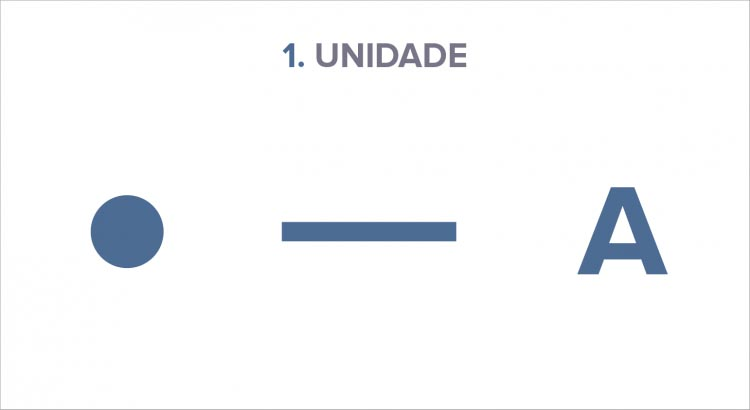
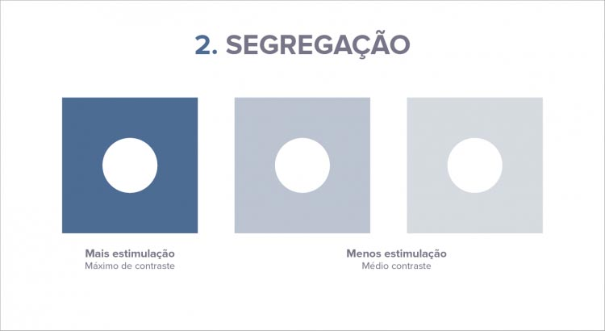
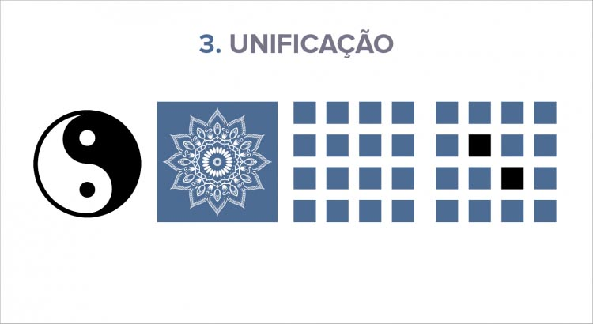
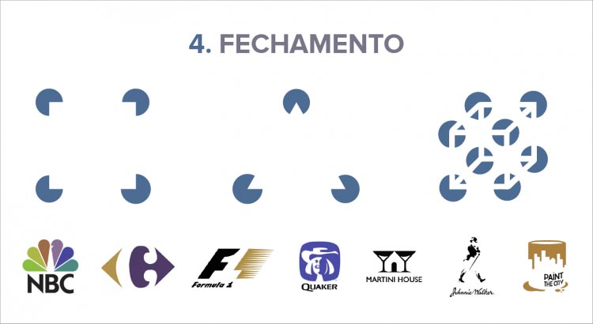
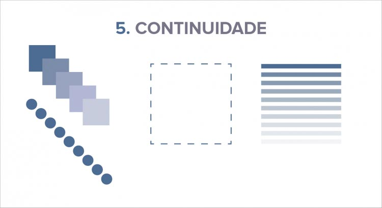

Leis da Gestalt
Dentro de Gestalt, temos alguns fundamentos que são considerados de extrema importância ao estudarmos e aplicarmos esta psicologia.
Iremos agora conhecer as principais leis da Gestalt :
Unidade
Uma unidade é um único elemento que se encerra em si mesmo ou também um conjunto de elementos percebidos que constituem “um todo”. Podemos definir uma unidade através das cores, sombras, texturas, pontos, linhas, pontos, etc; isolados ou relacionados entre si.
Segregação
Diz respeito a nossa capacidade perceptiva de evidenciar, destacar, separar uma ou mais unidades na composição inteira ou em partes dela. Essa segregação pode ser feita por diversos elementos visuais: cores, sombras, texturas, pontos, linhas e etc.
Unificação
A unificação acontece quando existem elementos iguais ou semelhantes distribuídos de forma coerente e harmônica. Os princípios básicos da unificação são as leis de proximidade e a lei de semelhança.
Fechamento
O fechamento se estabelece para a formação de unidades através da nossa percepção. Nosso cérebro interpreta uma forma completa se os elementos estão estruturados de uma forma definida.
Continuidade
A continuidade acontece quando elementos estão próximos e dão a impressão de seguir uma determinada direção. Quando existe uma repetição ordenada dos elementos.
Proximidade
Se refere a elementos que estão próximos. Elementos próximos uns dos outros tendem a se agruparem e são percebidos como um todo ou unidades dentro de um todo.
Semelhança
Se refere a elementos semelhantes.Elementos semelhantes tendem a se agruparem formando um como um todo ou unidades dentro de um todo. Essa semelhança pode ser cor, forma, tamanho, textura, etc.

Pregnância da Forma
Essa é a principal lei da Gestalt.
Quanto mais evidente for a forma do objeto, quanto mais intuitivo e de fácil compreensão é a leitura, maior é o grau de pregnância do objeto.
Quanto melhor ou mais clara for a organização, maior a pregnância!